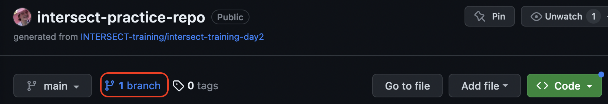
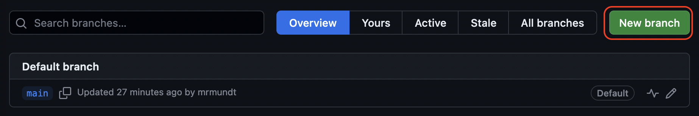
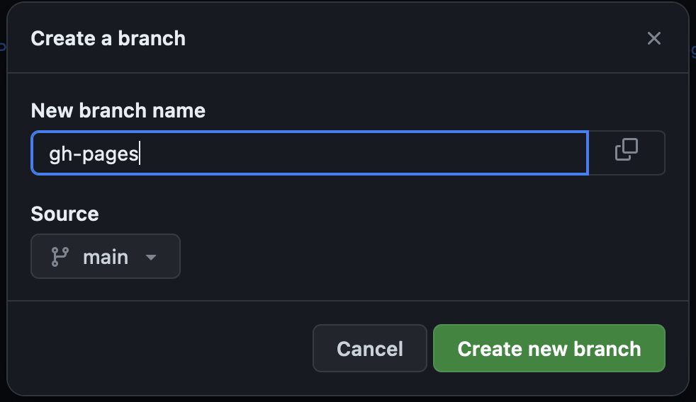
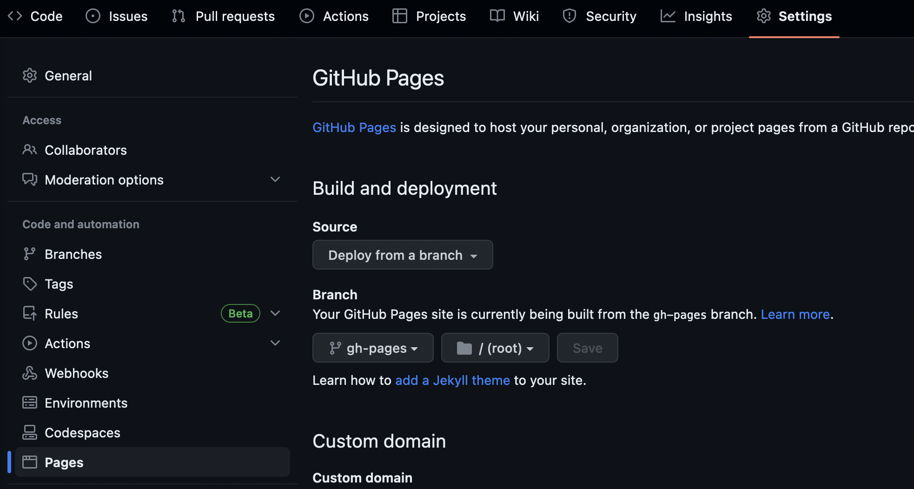
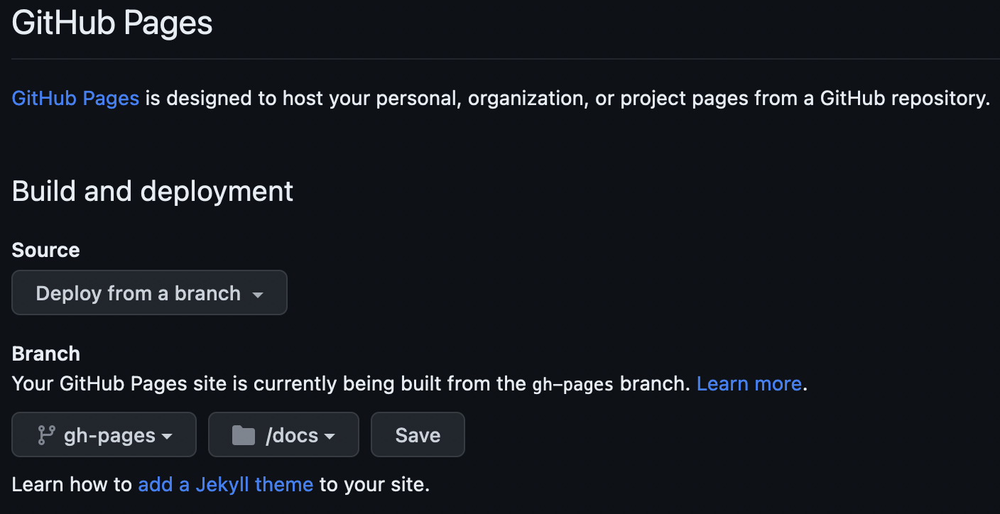

Documentation Tools
Last updated on 2025-01-04 | Edit this page
Estimated time: 25 minutes
Overview
Questions
- “What tools enable better documentation?”
- “What tools can streamline the documentation process?”
Objectives
- “Become familiar with categories of tools to streamline documentation processes.”
- “Practice using a small subset of documentation tools.”
Documentation Tools
There are plenty of tools to make documentation easier. In this episode, we will cover just a few, but keep in mind, this is by no means an exhaustive list.
Style Guides and Standards
A good first step to streamline the documentation process is to create or apply an existing style guide. This is useful both for developer and user documentation.
For users, common standards and styles makes the documentation predictable, consistent, and easier to read and use. For developers, common standards and styles allow developers to focus more on logic than styling and makes fewer ambiguities and increases the chance that they will identify errors.
There is no single standard across all languages and projects. Some language style guides have specific recommendations for in-line documentation like code comments and API documentation (e.g., Doxygen, Google, NumPy).
PRACTICE: Google Style for Euler’s Method
Google has many style guides, including a Python guide for writing docstrings.
Using the Google style guide, write a docstring for the following class and its methods:
IDEs
Modern integrated development environments (IDEs) are applications that combine text editing with other useful tools like building, testing, etc. Many also enable automatic documentation generation in some variety. To name a few:
| IDE | Languages |
|---|---|
| VSCode | PHP, HTML, CSS, SCSS, Less, JavaScript, JSON, TypeScript, Markdown, PowerShell, C++, Java, Python, Go, T-SQL, C#, .NET Core, etc. |
| NetBeans | C, C++, C++11, Fortran, HTML 5, Java, PHP, etc. |
| PyCharm | AngularJS, Coffee Script, CSS, Cython, HTML, JavaScript, Node.js, Python, TypeScript |
| Eclipse | C, C++, Java, Perl, PHP, Python, Ruby, etc. |
Many of these IDEs incorporate documentation generators that follow standard style guides. For example, the Spyder IDE will begin to generate docstrings based on your specified style guide.
Automated Generation
Another set of tools that streamline the documentation process are those that automatically generate the documentation within your software package. The two most popular documentation generators are:
Both of these tools will generate documentation, per configuration preferences, and automatically integrate information like API documentation.
PRACTICE: Trying out Sphinx
We will quickly practice getting Sphinx set up on a project.
NOTE: These steps assume you are working from the command line and have a clone of your practice repository.
- (OPTIONAL, but recommended) Make a virtual Python environment
- Install sphinx:
pip install sphinx - Move to your practice directory:
cd /path/to/your/practice/repository - Make and move to a document directory:
mkdir docs && cd docs - Run Sphinx’s quickstart:
sphinx-quickstart(NOTE: Use default options as applicable; fill out everything else as you desire.) - Generate the documentation:
make html - View your documentation:
open _build/html/index.html
Automated Publishing
Potentially the most helpful method of streamlining the documentation process is to implement automated publishing. By implementing this, when a new feature or change is merged into your code base, your documentation will be generated and published automatically. Two popular documentation hosting tools are:
Both of these services will publish documentation from open source software for free. They can be set up to publish the most recent version of all documentation as soon as a new change is introduced to the main code.
We will practice doing this with GitHub Pages. Before getting into the exercise, you will need to make sure GitHub Pages is activated on your practice repository.
-
Make a
gh-pagesbranch. Either from the GUI or through command line, make a new branch namedgh-pages. In the GUI, you would do this by clicking on the branches link:  Then click on “New branch”:  Name itgh-pages:  - Set up GitHub to build from that branch. In the GUI, go to “Settings” > “Pages”:  Change the settings to “Source: Deploy from branch”, “Branch: gh-pages”, and “directory /docs”. Then hit “Save.” 
Now complete the following exercise!
PRACTICE: Sphinx to GitHub Pages
Now that we have some starter documentation, let’s publish it to GitHub Pages.
NOTE: These steps assume you are working from the command line and have a clone of your practice repository.
- Make a local copy of the
gh-pagesbranch:git -b checkout gh-pages - Set your local copy to track GitHub’s copy:
git push --set-upstream origin gh-pages - Move to the
docsdirectory and clean up the previous build:cd docs && make clean - Change the default build location: For
Makefileandmake.bat, changeBUILDDIR = _buildtoBUILDDIR = . - Make your documentation:
make html - Make a file
index.htmlin thedocsdirectory with the content:<meta http-equiv="refresh" content="0; url=./html/index.html" />(NOTE: This tells GitHub to use thehtml/index.htmlfile as the main page.) - Add all your changes, commit, and push:
git add docs/ && git commit -m "Add documentation to GitHub Pages" && git push - Wait a minute or two, then view your documentation at https://YOURUSERNAME.github.io/intersect-practice-repo/html/index.html
What happened to the styling?!
GitHub renders styles in a unique way using Jekyll. We can turn this off by adding
an empty .nojekyll file in the docs
directory.
That’s it! You now know some useful tips and tricks for making better documentation.
Key Points
- “Documentation tools vary from styles to text editors to automation.”
- “Many tools have quick-start capabilities to get small or new projects started with better documentation processes.”